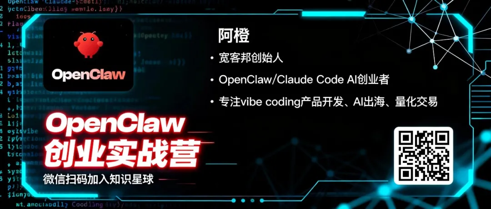
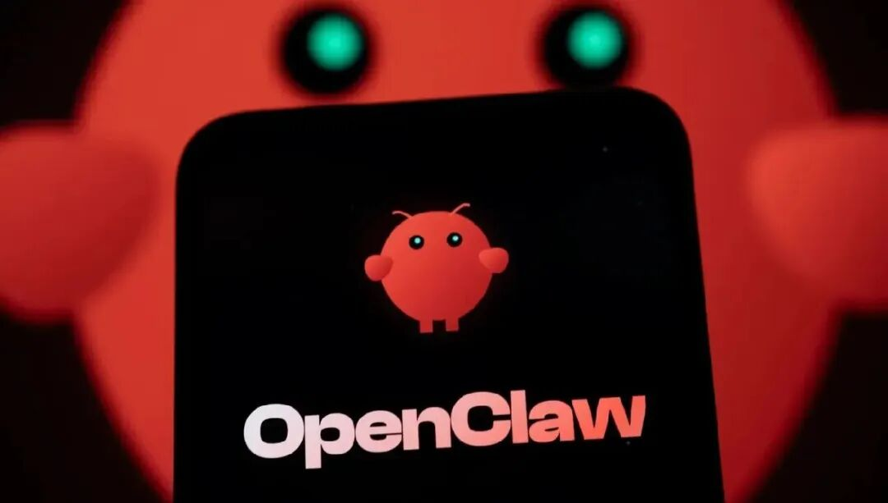
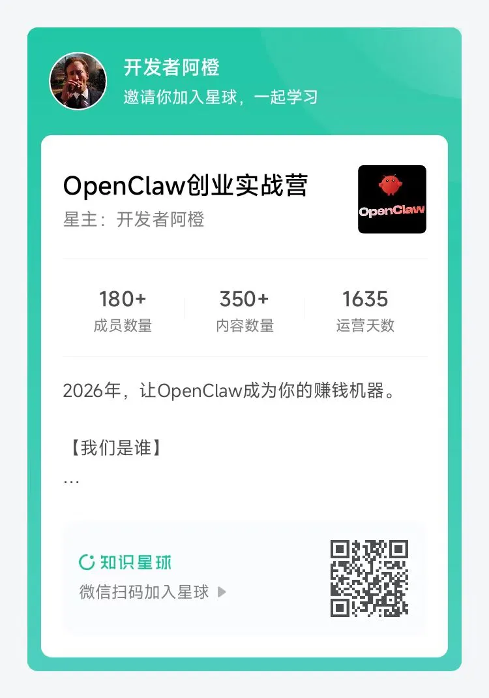

这是2026年最重要的一个判断：
今年，每个开发者都不得不面临一次历史性的人生选择。
要么继续做AI的奴隶，要么成为AI的主人。
听起来很夸张？让我告诉你为什么。
2025年发生了什么
去年，Claude Code横空出世，AI写代码的能力达到了人类水平。
但有一个致命问题：它被关在浏览器里。
你只能用它写代码、改代码、调试代码。
但它没法真正"做事"。
• 它不能自动部署你的应用到服务器 • 它不能帮你批量处理1000个文件 • 它不能帮你自动执行交易策略 • 它不能帮你监控竞品价格并发送提醒
AI始终隔着一层玻璃，你看得见，摸不着。
2026年，彻底破局
OpenClaw的出现，打碎了这层玻璃。
这是2026年最大的突破：AI第一次获得了系统级操作能力。

这意味着什么？
AI不再只是一个"编码助手"，它变成了一个"执行代理"。
以前：你用AI写代码，自己部署，自己测试，自己运营。
现在：你用AI写代码，AI自动部署，AI自动测试，AI自动运营。
以前是"AI辅助你工作"，现在是"AI替你工作"。
这是质的飞跃。
这个突破意味着什么？
对于开发者来说，这是降维打击。
不懂AI的传统开发者？
他们会像20年前不用IDE、只用记事本写代码的人一样被淘汰。
对于创业者来说，这是黄金窗口。
为什么？
1、技术门槛骤降
以前做一个自动化工具，需要前端、后端、运维、测试。
现在？一个人+OpenClaw+Claude Code，一周搞定。
2、开发效率提升10倍
本地优先架构，系统级操作，不需要频繁调试API。
3天交付一个可盈利的Agent，不是口号，是常态。
3、变现路径清晰
自动化工具、量化交易Agent、内容生产系统、企业定制开发...每一个方向，都有已经验证的成功案例。
这是一个全新的时代。
2026年，是AI Agent创业元年。
但90%的人会错过
每次技术革命，都是10%的人破局，90%的人观望。
2016年，短视频爆发，10%的人做号赚钱，90%的人说"过气了"。
2019年，直播带货爆发，10%的人入局赚爆，90%的人说"割韭菜"。
2023年，ChatGPT爆发，10%的人做AI应用赚钱，90%的人说"体验差"。
2026年，OpenClaw爆发的这一年，历史会重演。
10%的人会抓住机会，搭建自己的AI赚钱机器。
90%的人会继续观望，直到机会消失。
为什么大多数人会错过？
因为他们没有看到完整的路径。
他们不知道从哪里开始。
他们害怕踩坑。
他们缺少同伴和指导。
所以，我决定做那10%的引路人。
我发起了一个实战社群
OpenClaw创业实战营
它的目标只有一个：帮助1万名开发者在2026年完成破局。

这不仅是课程，不仅是社群，更是实战孵化器。
能带给你什么？
1. 每周1个真实案例拆解
从开发、配置到首次盈利的完整路径。
你可以直接复制，也可以基于它改进。
2. 100+种变现路径
用OpenClaw自动化已经跑通的变现方案：
• 自动化工具开发（爬虫、数据处理、批量操作） • 量化交易Agent（策略执行、自动回测、风险控制） • 内容生产系统（AI写作、视频生成、批量发布） • 企业定制开发（客服机器人、流程自动化、数据分析）
3. 10倍开发效率
OpenClaw + Claude Code的组合拳：
本地优先架构 + 系统级操作能力
3天交付一个可盈利的Agent，不是梦想。
4. 全程陪跑服务
从环境搭建到变现，我们一直在。
遇到坑？我们帮你避开90%的坑，节省3个月试错时间。
5. 资源对接群
学习伙伴、技术合伙人、投资渠道、客户资源。
你想找的人，都在这里。
谁适合加入？
• 程序员，想在2026年用AI Agent开启副业或创业 • 量化交易者，想实现策略的自动化执行 • 互联网从业者，想快速验证AI产品想法 • 自由职业者，想接更多AI定制项目 • 所有看到2026年机会，想用OpenClaw破局的人
早鸟价，抢占红利
定价策略：
早鸟价：199元/年
每满100人涨价100元，最终999元。
现在199元，一年后要999元。
一天不到6毛钱，换取一个破局的机会。
这是2026年最值得的投资。
加入后，你将会得到
📁 100+个可直接使用的变现案例（持续更新）
📦 完整开源代码仓库（含配置文件）
🎥 重点案例视频演示（手把手教学）
💬 24小时实战答疑（有问必答）
2026年，只有一次机会
技术革命的窗口期，通常只有12-18个月。
OpenClaw刚刚诞生，知道的人还不多。
竞争还没那么激烈，红利还很充足。
现在入局，你就是在抢占先机。
等到所有人都知道了，机会就没了。
你想做那10%，还是那90%？
选择权在你。
2026年，让OpenClaw成为你的赚钱机器。
点击阅读原文加入OpenClaw创业实战营